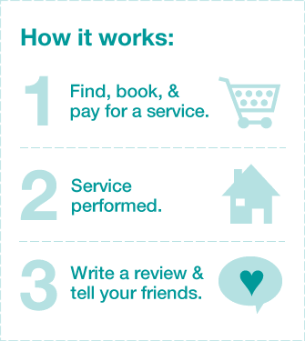

Make your life better.
Find Services
Select a location
Madrid
Minneapolis
NYC
Preferred date:

Loconomics, at your service.
Twitter
Facebook
Sign in
|
Sign up
|
How it works
Select a language
English (US)
Español
Go
Become a provider
Cart